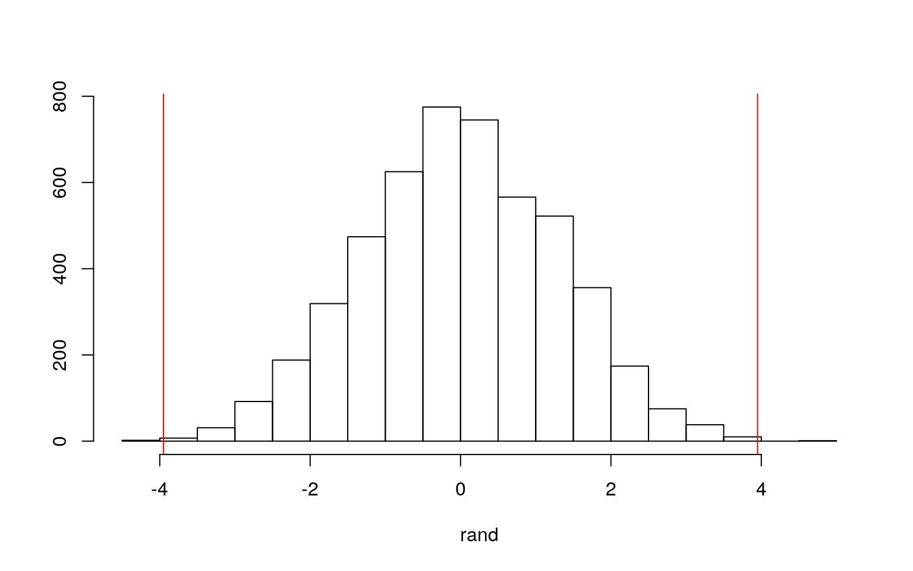
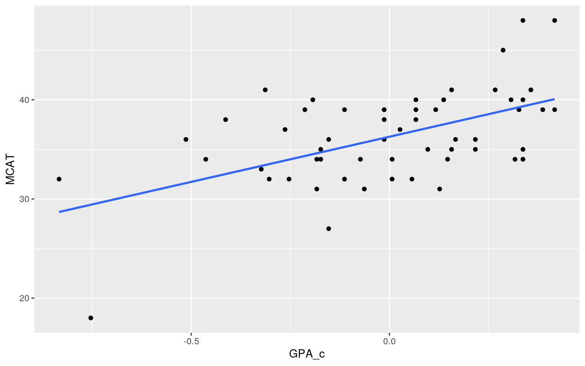
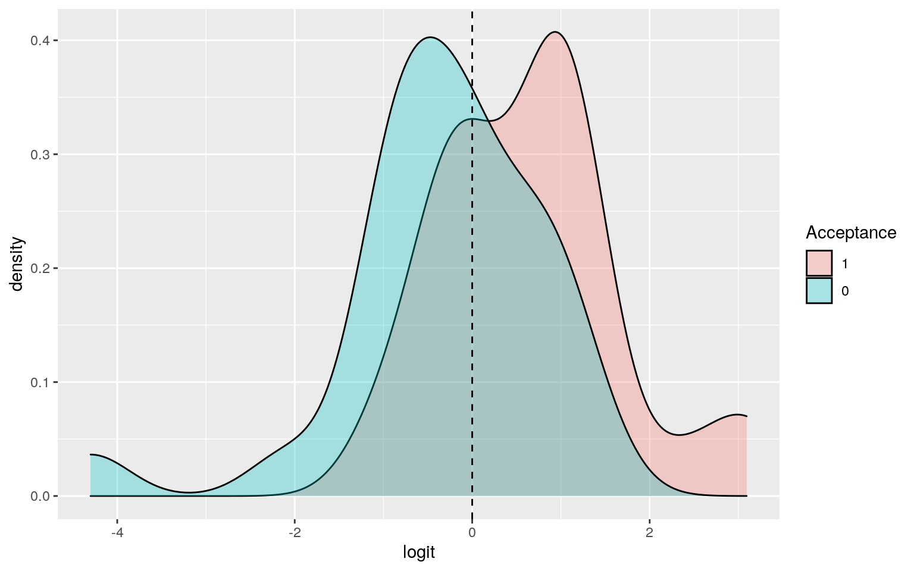
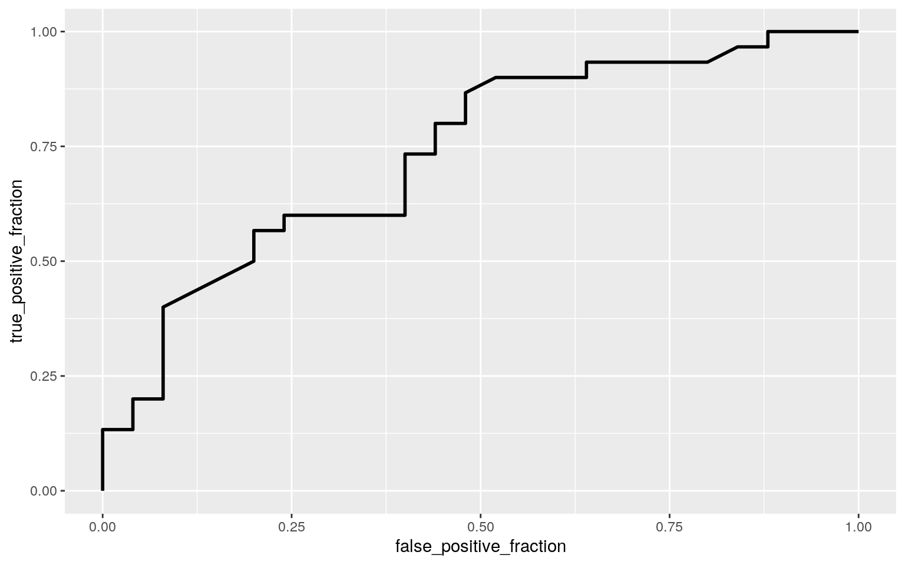

MedGPA = read.csv("MedGPA.csv")
head(MedGPA)## X Accept Acceptance Sex BCPM GPA VR PS WS BS MCAT Apps
## 1 1 D 0 F 3.59 3.62 11 9 9 9 38 5
## 2 2 A 1 M 3.75 3.84 12 13 8 12 45 3
## 3 3 A 1 F 3.24 3.23 9 10 5 9 33 19
## 4 4 A 1 F 3.74 3.69 12 11 7 10 40 5
## 5 5 A 1 F 3.53 3.38 9 11 4 11 35 11
## 6 6 A 1 M 3.59 3.72 10 9 7 10 36 5library(rstatix)
group <- MedGPA$Accept
DVs <- MedGPA %>% select(BCPM,GPA,MCAT,Apps)
#test multivariate normality for each group (null: assumption met)
sapply(split(DVs,group), mshapiro_test)## A D
## statistic 0.9533242 0.832119
## p.value 0.2073555 0.0008212247#if any p < .05, stop. If not, test homogeneity of covariance matrices.
#view covariance matrices for each group
lapply(split(DVs,group), cov)## $A
## BCPM GPA MCAT Apps
## BCPM 0.07209609 0.05627356 0.5123678 -0.00354023
## GPA 0.05627356 0.04946437 0.4314943 -0.15011494
## MCAT 0.51236782 0.43149425 17.2367816 -5.45747126
## Apps -0.00354023 -0.15011494 -5.4574713 22.18850575
##
## $D
## BCPM GPA MCAT Apps
## BCPM 0.11798900 0.08650867 0.5456167 -0.02726667
## GPA 0.08650867 0.07090933 0.4685167 -0.13471667
## MCAT 0.54561667 0.46851667 22.5266667 1.75333333
## Apps -0.02726667 -0.13471667 1.7533333 23.74000000man <- manova(cbind(BCPM,GPA,MCAT,Apps)~Accept, data=MedGPA)
summary(man)## Df Pillai approx F num Df den Df Pr(>F)
## Accept 1 0.31559 5.764 4 50 0.0006788 ***
## Residuals 53
## ---
## Signif. codes: 0 '***' 0.001 '**' 0.01 '*' 0.05 '.' 0.1
' ' 1summary.aov(man)## Response BCPM :
## Df Sum Sq Mean Sq F value Pr(>F)
## Accept 1 1.6922 1.69216 18.219 8.179e-05 ***
## Residuals 53 4.9225 0.09288
## ---
## Signif. codes: 0 '***' 0.001 '**' 0.01 '*' 0.05 '.' 0.1
' ' 1
##
## Response GPA :
## Df Sum Sq Mean Sq F value Pr(>F)
## Accept 1 1.2947 1.29472 21.879 2.043e-05 ***
## Residuals 53 3.1363 0.05918
## ---
## Signif. codes: 0 '***' 0.001 '**' 0.01 '*' 0.05 '.' 0.1
' ' 1
##
## Response MCAT :
## Df Sum Sq Mean Sq F value Pr(>F)
## Accept 1 212.4 212.402 10.819 0.001789 **
## Residuals 53 1040.5 19.632
## ---
## Signif. codes: 0 '***' 0.001 '**' 0.01 '*' 0.05 '.' 0.1
' ' 1
##
## Response Apps :
## Df Sum Sq Mean Sq F value Pr(>F)
## Accept 1 3.5 3.5006 0.1529 0.6973
## Residuals 53 1213.2 22.8911MedGPA %>% group_by(Accept) %>% summarize(mean(BCPM), mean(GPA), mean(MCAT))## # A tibble: 2 x 4
## Accept `mean(BCPM)` `mean(GPA)` `mean(MCAT)`
## <fct> <dbl> <dbl> <dbl>
## 1 A 3.66 3.69 38.1
## 2 D 3.31 3.39 34.1pairwise.t.test(MedGPA$BCPM, MedGPA$Accept, p.adj="none")##
## Pairwise comparisons using t tests with pooled SD
##
## data: MedGPA$BCPM and MedGPA$Accept
##
## A
## D 8.2e-05
##
## P value adjustment method: nonepairwise.t.test(MedGPA$GPA, MedGPA$Accept, p.adj="none")##
## Pairwise comparisons using t tests with pooled SD
##
## data: MedGPA$GPA and MedGPA$Accept
##
## A
## D 2e-05
##
## P value adjustment method: nonepairwise.t.test(MedGPA$MCAT, MedGPA$Accept, p.adj="none")##
## Pairwise comparisons using t tests with pooled SD
##
## data: MedGPA$MCAT and MedGPA$Accept
##
## A
## D 0.0018
##
## P value adjustment method: none#did 1 MANOVA, 2 ANOVAs, and t-tests(6 tests).
.05/5## [1] 0.01pairwise.t.test(MedGPA$BCPM, MedGPA$Accept, p.adj="bonferroni")##
## Pairwise comparisons using t tests with pooled SD
##
## data: MedGPA$BCPM and MedGPA$Accept
##
## A
## D 8.2e-05
##
## P value adjustment method: bonferronipairwise.t.test(MedGPA$GPA, MedGPA$Accept, p.adj="bonferroni")##
## Pairwise comparisons using t tests with pooled SD
##
## data: MedGPA$GPA and MedGPA$Accept
##
## A
## D 2e-05
##
## P value adjustment method: bonferronipairwise.t.test(MedGPA$MCAT, MedGPA$Accept, p.adj="bonferroni")##
## Pairwise comparisons using t tests with pooled SD
##
## data: MedGPA$MCAT and MedGPA$Accept
##
## A
## D 0.0018
##
## P value adjustment method: bonferroniMedGPA %>% group_by(Accept) %>% summarize(meanMCAT = mean(MCAT))## # A tibble: 2 x 2
## Accept meanMCAT
## <fct> <dbl>
## 1 A 38.1
## 2 D 34.1MedGPA %>% group_by(Accept) %>% summarize(m = mean(MCAT)) %>% summarize(diff(m))## # A tibble: 1 x 1
## `diff(m)`
## <dbl>
## 1 -3.95rand <- vector()
for (i in 1:5000) {
samp <- data.frame(MCAT = sample(MedGPA$MCAT), accept = MedGPA$Accept)
rand[i] <- mean(samp[samp$accept == "A",]$MCAT) - mean(samp[samp$accept == "D",]$MCAT)
}
mean(rand < -3.95 | rand > 3.95)## [1] 8e-04{hist(rand, main = "", ylab = ""); abline(v = c(-3.95, 3.95), col = "red")}
t.test(data=MedGPA, MCAT~Accept)##
## Welch Two Sample t-test
##
## data: MCAT by Accept
## t = 3.2489, df = 48.16, p-value = 0.002115
## alternative hypothesis: true difference in means is not
equal to 0
## 95 percent confidence interval:
## 1.504450 6.388883
## sample estimates:
## mean in group A mean in group D
## 38.06667 34.12000library(sandwich)
library(lmtest)
MedGPA$GPA_c <- MedGPA$GPA - mean(MedGPA$GPA)
MedGPA$BCPM_c <- MedGPA$BCPM - mean(MedGPA$BCPM)
linfit <- lm(MCAT ~ GPA_c*BCPM_c, data=MedGPA)
summary(linfit)##
## Call:
## lm(formula = MCAT ~ GPA_c * BCPM_c, data = MedGPA)
##
## Residuals:
## Min 1Q Median 3Q Max
## -11.4795 -2.4920 -0.1341 2.7046 8.6716
##
## Coefficients:
## Estimate Std. Error t value Pr(>|t|)
## (Intercept) 36.2583 0.6814 53.211 <2e-16 ***
## GPA_c 9.8073 6.9300 1.415 0.163
## BCPM_c -0.5683 5.7335 -0.099 0.921
## GPA_c:BCPM_c 0.1532 4.0872 0.037 0.970
## ---
## Signif. codes: 0 '***' 0.001 '**' 0.01 '*' 0.05 '.' 0.1
' ' 1
##
## Residual standard error: 4.167 on 51 degrees of freedom
## Multiple R-squared: 0.2933, Adjusted R-squared: 0.2517
## F-statistic: 7.056 on 3 and 51 DF, p-value: 0.0004673coef(linfit)## (Intercept) GPA_c BCPM_c GPA_c:BCPM_c
## 36.2582778 9.8073014 -0.5682915 0.1531758MedGPA %>% ggplot(aes(GPA_c,MCAT)) + geom_point() + geom_smooth(method="lm", se=F)
coeftest(linfit, vcov=vcovHC(linfit))[,1:2]## Estimate Std. Error
## (Intercept) 36.2582778 0.6958418
## GPA_c 9.8073014 7.4241513
## BCPM_c -0.5682915 6.1155602
## GPA_c:BCPM_c 0.1531758 7.8027847SST <- sum((MedGPA$MCAT-mean(MedGPA$MCAT))^2) #SS Total
SSR <- sum((linfit$fitted.values-mean(MedGPA$MCAT))^2) #SS Regression
SSE <- sum(linfit$residuals^2) #SS Error
SSR/SST # proportion of variance explained## [1] 0.2933102resids <- linfit$residuals #save residuals
fitted <- linfit$fitted.values #save yhats/predictions
resid_resamp <- replicate(5000,{
new_resids <- sample(resids, replace=TRUE)
MedGPA$new_y <- fitted+new_resids
fit <- lm(new_y~GPA_c*BCPM_c, data=MedGPA)
coef(fit)
})
## Estimated SEs
resid_resamp %>% t %>% as.data.frame %>% summarize_all(sd)## (Intercept) GPA_c BCPM_c GPA_c:BCPM_c
## 1 0.6616206 6.763312 5.577327 3.928986## Empirical 95% CI
resid_resamp %>% t %>% as.data.frame %>% pivot_longer(1:3) %>% group_by(name) %>%
summarize(lower=quantile(value,.025), upper=quantile(value,.975)) ## # A tibble: 3 x 3
## name lower upper
## <chr> <dbl> <dbl>
## 1 (Intercept) 35.0 37.5
## 2 BCPM_c -11.3 10.2
## 3 GPA_c -3.71 23.0fit <- glm(Acceptance ~ Apps + MCAT, data = MedGPA, family = "binomial")
summary(fit)##
## Call:
## glm(formula = Acceptance ~ Apps + MCAT, family =
"binomial",
## data = MedGPA)
##
## Deviance Residuals:
## Min 1Q Median 3Q Max
## -1.7915 -1.0299 0.4276 0.9218 1.6608
##
## Coefficients:
## Estimate Std. Error z value Pr(>|z|)
## (Intercept) -8.75183 3.38499 -2.585 0.00972 **
## Apps 0.00250 0.06231 0.040 0.96800
## MCAT 0.24646 0.09028 2.730 0.00633 **
## ---
## Signif. codes: 0 '***' 0.001 '**' 0.01 '*' 0.05 '.' 0.1
' ' 1
##
## (Dispersion parameter for binomial family taken to be 1)
##
## Null deviance: 75.791 on 54 degrees of freedom
## Residual deviance: 64.696 on 52 degrees of freedom
## AIC: 70.696
##
## Number of Fisher Scoring iterations: 4coeftest(fit)##
## z test of coefficients:
##
## Estimate Std. Error z value Pr(>|z|)
## (Intercept) -8.7518329 3.3849884 -2.5855 0.009724 **
## Apps 0.0024998 0.0623085 0.0401 0.967998
## MCAT 0.2464582 0.0902795 2.7299 0.006334 **
## ---
## Signif. codes: 0 '***' 0.001 '**' 0.01 '*' 0.05 '.' 0.1
' ' 1probs <- predict(fit,type="response")
MedGPA$probs <- predict(fit,type="response")
table(predict=as.numeric(probs>.5), truth=MedGPA$Acceptance) %>% addmargins## truth
## predict 0 1 Sum
## 0 15 10 25
## 1 10 20 30
## Sum 25 30 55#accuracy
(15+20)/55## [1] 0.6363636#sensitivity (TPR)
mean(MedGPA[MedGPA$Acceptance==1,]$probs>.5) #proportion of y=1 where prob is >.5## [1] 0.666666720/30## [1] 0.6666667#specificity (TNR)
mean(MedGPA[MedGPA$Acceptance==0,]$probs<.5) #proportion of y=0 where prob is <.5## [1] 0.615/25## [1] 0.6#precision
15/25## [1] 0.6#AUC
auc <- replicate(5000,{
rand_pos <- sample(MedGPA[MedGPA$Acceptance==1,]$probs)
rand_neg <- sample(MedGPA[MedGPA$Acceptance==0,]$probs)
case_when(rand_pos > rand_neg ~ 1, rand_pos == rand_neg ~ .5, rand_pos < rand_neg ~0)
})
mean(auc)## [1] 0.7364733MedGPA$logit <- predict(fit,type="link")
MedGPA %>% mutate(Acceptance=factor(Acceptance,levels=c("1","0"))) %>%
ggplot(aes(logit, fill=Acceptance)) + geom_density(alpha=.3) +
geom_vline(xintercept=0,lty=2)
library(plotROC)
ROCplot <- ggplot(MedGPA) + geom_roc(aes(d=Acceptance,m=probs), n.cuts=0)
ROCplot
calc_auc(ROCplot)## PANEL group AUC
## 1 1 -1 0.7366667MedGPA = read.csv("MedGPA.csv")
MedGPA <- MedGPA %>% select(-c(WS,Accept, X))
#in-sample classification diagnostics
logfit <- glm(Acceptance~., data = MedGPA, family = "binomial")
prob <- predict(logfit, type = "response")
class_diag <- function(prob,truth) {
tab <- table(factor(prob > 0.5, levels = c("FALSE", "TRUE")),
truth)
acc = sum(diag(tab))/sum(tab)
sens = tab[2, 2]/colSums(tab)[2]
spec = tab[1, 1]/colSums(tab)[1]
ppv = tab[2, 2]/rowSums(tab)[2]
if (is.numeric(truth) == FALSE & is.logical(truth) == FALSE)
truth <- as.numeric(truth) - 1
ord <- order(prob, decreasing = TRUE)
prob <- prob[ord]
truth <- truth[ord]
TPR = cumsum(truth)/max(1, sum(truth))
FPR = cumsum(!truth)/max(1, sum(!truth))
dup <- c(prob[-1] >= prob[-length(prob)], FALSE)
TPR <- c(0, TPR[!dup], 1)
FPR <- c(0, FPR[!dup], 1)
n <- length(TPR)
auc <- sum(((TPR[-1] + TPR[-n])/2) * (FPR[-1] - FPR[-n]))
data.frame(acc, sens, spec, ppv, auc)
}
class_diag(prob, MedGPA$Acceptance)## acc sens spec ppv auc
## 1 0.8909091 0.9 0.88 0.9 0.952#10-fold CV
set.seed(1234)
k = 10
data <- MedGPA[sample(nrow(MedGPA)),]
folds <- cut(seq(1:nrow(MedGPA)), breaks = k, labels = F)
diags <- NULL
for (i in 1:k) {
train <- data[folds != i, ]
test <- data[folds == i, ]
truth <- test$Acceptance
fitted <- glm(Acceptance~., data = train, family = "binomial")
probz <- predict(fitted, newdata = test, type = "response")
diags <- rbind(diags, class_diag(probz, truth))
}
summarize_all(diags, mean)## acc sens spec ppv auc
## 1 0.7866667 0.7833333 0.7916667 0.85 0.8541667#LASSO
library(glmnet)
set.seed(1234)
med_preds <- model.matrix(Acceptance ~ ., data = MedGPA)[, -1] #predictors (drop intercept)
med_resp <- as.matrix(MedGPA$Acceptance) #grab response
cv <- cv.glmnet(med_preds, med_resp, family = "binomial")
lasso_fit <- glmnet(med_preds, med_resp, family = "binomial", lambda = cv$lambda.1se)
coef(lasso_fit)## 9 x 1 sparse Matrix of class "dgCMatrix"
## s0
## (Intercept) -10.63273091
## SexM -0.11456318
## BCPM .
## GPA 1.74982153
## VR .
## PS 0.03984831
## BS 0.43887675
## MCAT .
## Apps .#LASSO 10-fold CV
set.seed(1234)
k = 10
med <- MedGPA %>% mutate(SexM = ifelse(MedGPA$Sex == "M", 1, 0))
data <- med[sample(nrow(med)),]
folds <- cut(seq(1:nrow(med)), breaks = k, labels = F)
diags <- NULL
for (i in 1:k) {
train <- data[folds != i,]
test <- data[folds == i,]
truth <- test$Acceptance
fits <- glm(Acceptance ~ SexM + GPA + PS, BS, data = train, family = "binomial")
proba <- predict(fits, newdata = test, type = "response")
diags <- rbind(diags, class_diag(proba, truth))
}
diags %>% summarize_all(mean)## acc sens spec ppv auc
## 1 0.75 0.7833333 0.7333333 0.775 0.8555556